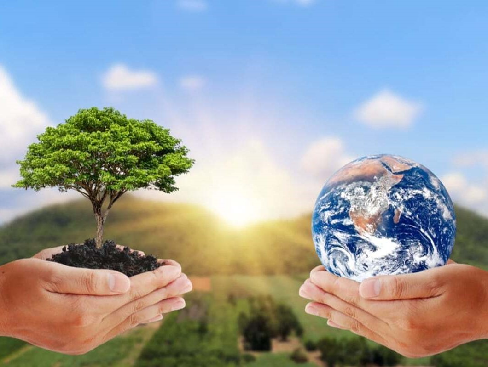
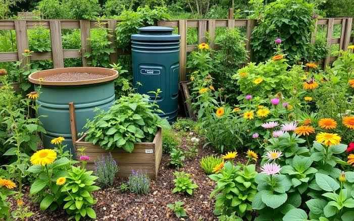
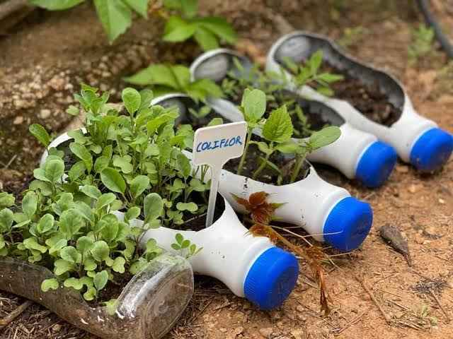

Introduction

Sustainability has become a critical goal in our efforts to protect the planet and ensure a healthy environment for future generations. As human activities continue to strain natural resources and contribute to climate change, it’s more important than ever to adopt eco-friendly practices. Sustainability means meeting our current needs without compromising the ability of future generations to meet theirs. This includes reducing waste, conserving water, adopting renewable energy, and making mindful choices in everything from transportation to food consumption.
Achieving sustainability requires both individual actions and systemic changes. Governments, businesses, and communities need to work together to create policies and infrastructures that support sustainable living. Meanwhile, individuals can play their part by making small but impactful changes in their daily lives, such as reducing plastic use, conserving energy, and supporting sustainable products.
In this blog, we’ll explore various eco-friendly practices, share tips on how to lead a more sustainable lifestyle, and highlight how even small changes can make a big difference in addressing the climate crisis. Together, we can build a greener, healthier future for all.
Articles
Four ways to reduce the carbon in your food basket

Reducing the carbon footprint of your food choices is crucial for promoting a more sustainable future. Here are four effective strategies you can adopt:
- Embrace Plant-Based Foods: Incorporating more fruits, vegetables, and grains into your diet can significantly lower greenhouse gas emissions compared to traditional animal products.
- Cut Back on Meat and Dairy: Limiting the consumption of meat, especially red meat, is essential as livestock farming is a major source of methane emissions. Opt for alternatives to decrease your impact.
- Minimize Food Waste: A staggering amount of food produced goes uneaten, which contributes to unnecessary emissions. By planning meals carefully and storing food properly, you can help combat this issue.
- Choose Local and Seasonal Produce: Selecting foods that are grown locally and in season reduces the energy required for transportation and storage, leading to a lower carbon footprint.
Implementing these strategies can lead to meaningful changes in your diet and significantly reduce greenhouse gas emissions. For further insights, check out the full article on The Conversation here.
How sustainable living can help counter the climate crisis
How individual actions and sustainable living can significantly impact the climate crisis. By adopting a "1.5°C lifestyle," which involves changes in food, mobility, housing, and consumption, individuals can help reduce global greenhouse gas emissions. The article also stresses that systemic changes by governments and businesses are critical to making sustainable living the norm by ensuring that eco-friendly options are accessible, affordable, and appealing. It promotes the idea that everyone must act collectively to ensure climate goals are met.
Eco-Friendly Tips

Adopt the 5 Rs of Waste Management: Reduce, Refuse, Reuse, Recycle, and Rot. These actions help decrease landfill waste, conserve resources, and encourage environmentally friendly practices.
Opt for Eco-friendly Cleaning Solutions: Use natural products such as baking soda and lemon juice for cleaning tasks. Steer clear of harmful chemicals that can damage the environment and wildlife.
- Conserve Water: Install a water-efficient showerhead or toilet to dramatically reduce water usage. Simple actions like taking shorter showers can lead to significant water savings over time.
- Energy Efficiency: Washing clothes in cold water can conserve energy since 90% of the energy consumed by washing machines is used to heat water. This method also helps your garments last longer.
- Sustainable Gardening: Cultivate your own vegetables and start composting organic waste. This practice not only cuts down on food waste but also improves soil quality.